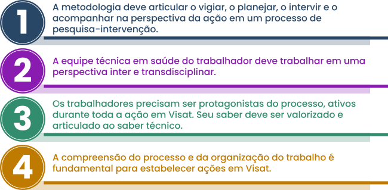

A ação em Visat é construída com base nas peculiaridades do local de trabalho, do território no qual é realizado, de seus trabalhadores, dos processos e da organização do trabalho. Portanto, não há uma padronização de ações, mas o entendimento da realidade para a construção de ações que busquem transformar o ambiente de trabalho em um local propício à saúde de seus trabalhadores.
Assim, destacamos os seguintes elementos fundamentais da ação em Visat:
